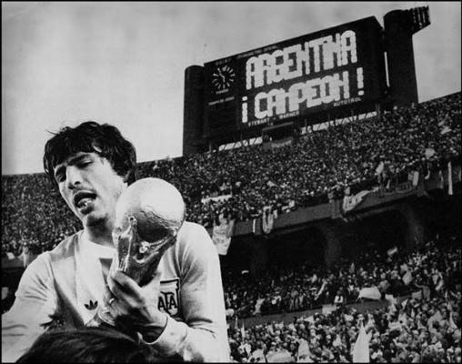

La XI Copa Mundial de Fútbol se desarrolló en Argentina, entre el 1 de junio y el 25 de junio de 1978. La Copa del Mundo volvía así a Sudamérica por primera vez desde 1962. El torneo fue disputado en 6 estadios, repartidos en las ciudades de Buenos Aires, Rosario, Mar del Plata, Córdoba y Mendoza. La mascota de este mundial fue Gauchito Mundialito y la pelota oficial sufrió un cambio revolucionario con la aparición de la Adidas Tango. Esta pelota se convirtió en un clásico del diseño que iba a perdurar durante cinco mundiales, y contaba con mayor impermeabilización que los diseños anteriores. Se jugó con el mismo sistema de eliminación que en Alemania Federal 1974: una primera ronda con cuatro grupos clasificatorios, donde los dos primeros de cada uno clasificaron a la segunda fase, en la que se definieron los dos finalistas. La gran final se jugó entre los Países Bajos, ganadores del Grupo A, y Argentina, que clasificó ganando el Grupo B. Fue un partido muy disputado en que los equipos debieron ir a tiempo suplementario, ya que en los 90 minutos habían empatado 1:1. Finalmente, con goles de Mario Kempes (2) y Daniel Bertoni (1) la selección albiceleste se impuso por 3:1, levantando la copa por primera vez , luego de que se le había escapado en la Copa Mundial de Fútbol de 1930, al perder por 4:2 en la final, ante Uruguay.
